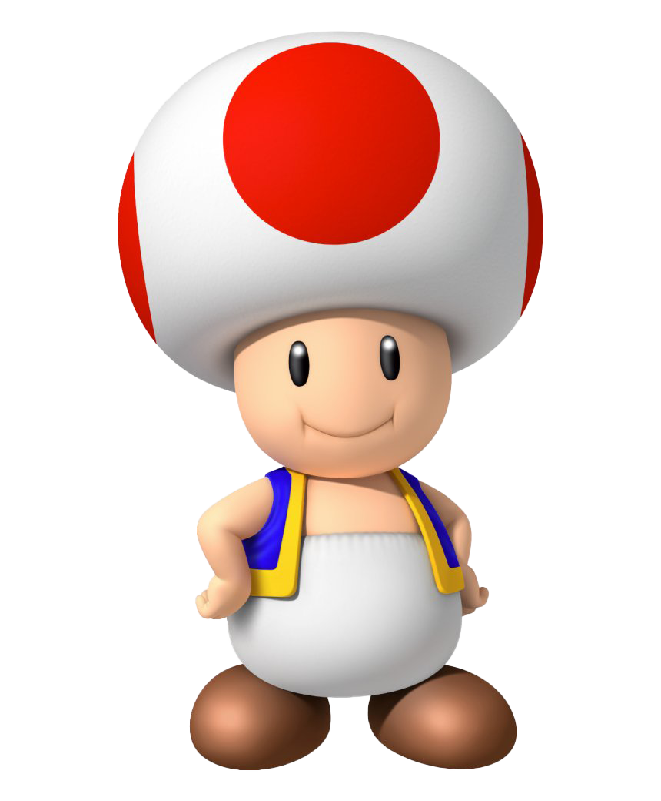

Mario estreou como "Jumpman" no jogo de arcade Donkey Kong em 9 de julho de 1981. Em 1986, Mario aparece em Super Mario Bros:The Lost Levels, considerado um dos jogos mais difíceis da franquia até hoje.

Um humanóide com cabeça semelhante a um cogumelo, é retratado como um cidadão do Reino do Cogumelo e é um dos atendentes mais leais da Princesa Peach. Toad tem uma aparência semelhante ao resto de sua espécie com seus grandes chapéus de cogumelos e roupas. Ele é muito pequeno e não tem pernas visíveis, apenas com seus típicos sapatos marrons aparecendo.